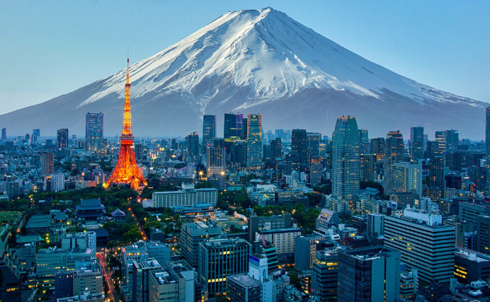
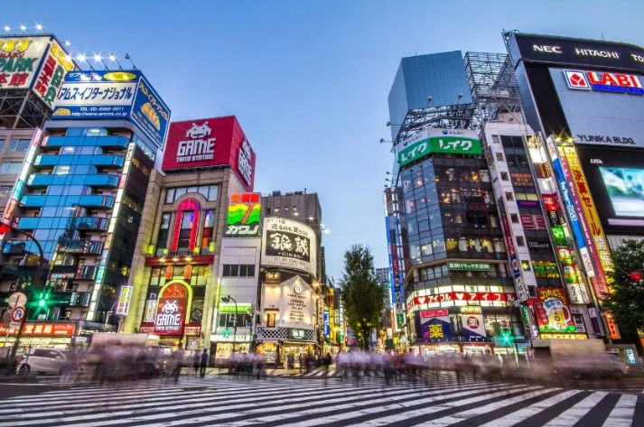

Japão: Tradição e Tecnologia
O Japão é uma nação localizada no continente asiático, formada por milhares de ilhas no Oceano Pacífico. Conhecido por unir tradição e tecnologia, o Japão é um dos países mais desenvolvidos do mundo. Sua capital é Tóquio, considerada uma das maiores e mais modernas metrópoles do planeta.
A história japonesa é marcada por períodos de guerras, expansão territorial e grande evolução cultural. Durante séculos, o país foi governado por imperadores e samurais, guerreiros que seguiam um rígido código de honra conhecido como bushido. No século XX, o Japão ganhou destaque mundial devido ao seu rápido crescimento.

A cultura japonesa preserva tradições antigas até os dias atuais. Cerimônias do chá, festivais tradicionais, templos budistas e o uso de roupas típicas fazem parte da identidade do país. Ao mesmo tempo, o Japão é conhecido mundialmente pela cultura pop, especialmente pelos animes, mangás e videogames.
A tecnologia também merece destaque. Empresas como Sony, Toyota e Nintendo tornaram-se referências globais. Além disso, o país é famoso pelos trens-bala (Shinkansen), que atingem altas velocidades com grande eficiência.

Entre os principais pontos turísticos, destaca-se o Monte Fuji, o Templo Senso-ji em Tóquio e a cidade de Kyoto, que preserva construções históricas e antigos palácios imperiais. A culinária japonesa também é muito apreciada, com pratos como sushi, sashimi e ramen.
Uma curiosidade interessante é que o Japão possui uma das maiores expectativas de vida do mundo. O país também é conhecido pela organização, limpeza e disciplina da população, além de possuir máquinas automáticas espalhadas por todas as cidades.
Referências
- Site oficial de turismo do Japão
- Britannica – Japan
- UNESCO – Patrimônios do Japão